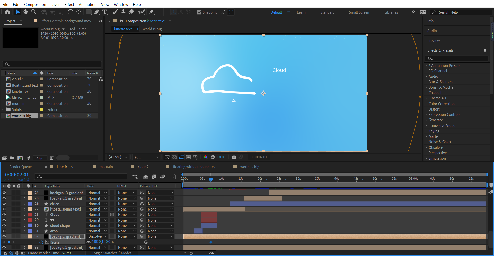
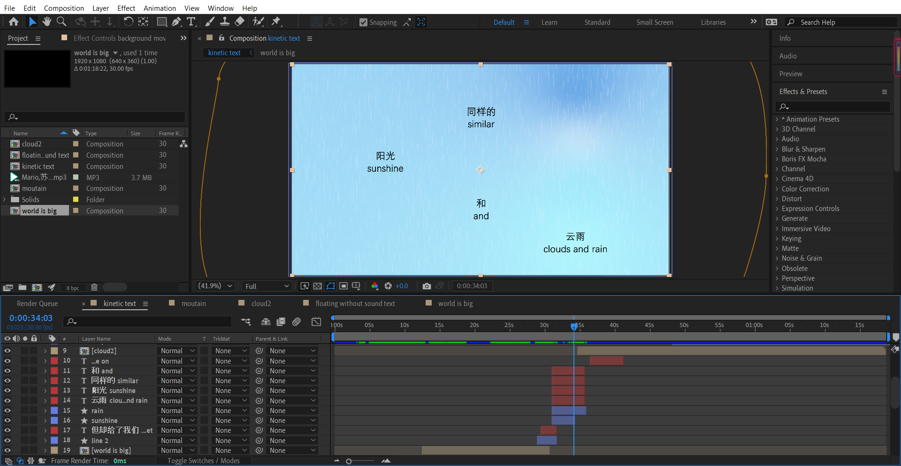
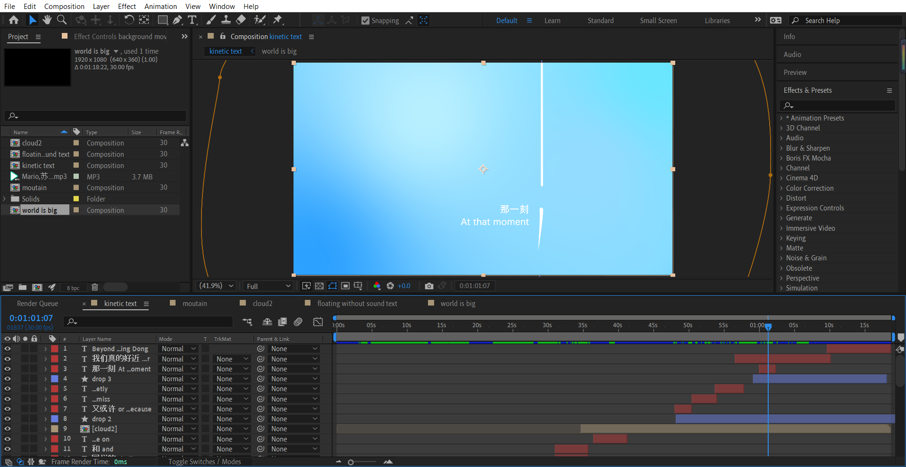

This is a kinetic text animation made with Adobe After Effects.
I decided to go with this simple and clean aesthetic, using mostly animated lines along with the texts.
I used a lot of trim paths, turbulent displaces, and masks in this piece for animating lines, shapes, and texts. I also animated gradients for the background and used a few After Effects presets.
  Released as a part of the original music album While We Are Young (五月的我们) by Mario.
Narration by Su Shangqing (苏尚卿).
Translation by Yiping Dong.